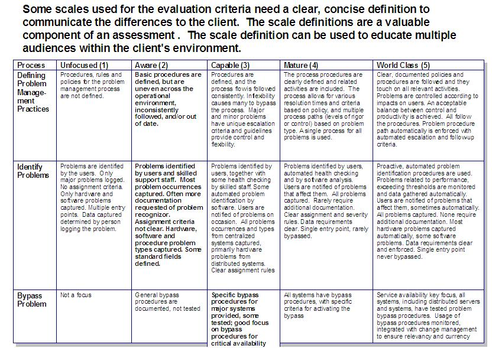

| Artifact: Network Assessment (ARC 324) |
 |
|
| The purpose of the Network Assessment is to determine the relative ‘health’ of the network as it is intended to support the business needs of the client. From the network assessment the consultant and architect can quickly determine which areas of the overall network infrastructure need to be addressed. A priority of ‘network needs’ can even be developed from the results of the network assessment. The assessment also serves to develop a better understanding of the criticality of the network environment. |
| Main Description | A Network Assessment work product is a review of a client’s network based on some criteria. The criteria could be related to availability, performance, integration, processes or some other aspect associated with the network. The assessment defines gaps between the client’s current network environment and the future set required to support the business requirements. |
|---|---|
| Brief Outline | The notation used during an assessment is typically matrix-based since a matrix lends itself well to visually representing degrees of something (high/medium/low, 1(low) through 10(high), check marks, plus or minus signs, ‘consumer report’ style circles (empty, one-quarter full, half-full, three-quarters full, full), etc. The notation can quickly show a client where the 'good' things about the network are and where the ‘needs improvement’ items are. One key point to remember is that you must define the rating criteria or scale so the client can easily understand what the charts mean. An example of defining a rating scale is included below. Notation  |
| Examples |
|---|
The following points should be remembered during the development of a Network Assessment. The deliverables are tactical in nature (a network ‘strategy’ is not being developed). Assessments do not result in technology solutions (there will be no vendor or product recommendations) An assessment should include a summary of:
It is commonly good practice to engage a member of the I&TM team when doing a Network Assessment, as frequently an ITPM Assessment can be run concurrently resulting in much more information and a much higher chance of follow-on business. |
| Impact of not having | By not doing a network assessment, it may be very difficult to address network issues with the existing network infrastructure. It may also be more difficult to identify those issues in the first place. Without these issues being identified, any future network strategy or architecture work may be at risk of unexpected ‘gotchas’ that only would appear in the context of a network assessment. |
|---|---|
| Reasons for not needing | It may not be necessary to perform a network assessment if the engagement is structured to be a product design or installation project. |
| Guidelines | |
|---|---|
| Estimation Considerations |
| © Copyright IBM Corp. 1987, 2012 All Rights Reserved Property of IBM These materials are intended only for use as part of an IBM engagement |